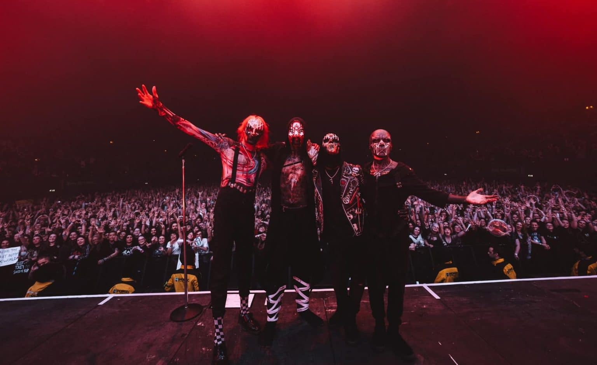
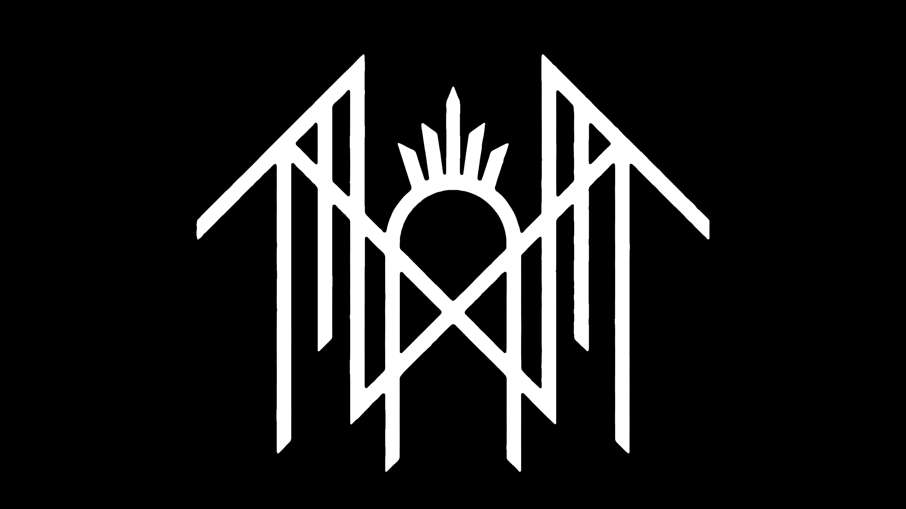

Sleep Token é uma banda britânica de rock, formada em 2016 em Londres, Inglaterra. O grupo é um coletivo mascarado anônimo liderado por um frontman apelidado de Vessel. Eles foram categorizados em muitos gêneros diferentes, incluindo metal alternativo, metalcore, post-rock/metal, metal progressivo e indie rock/pop. Depois de autopublicar seu extended play (EP) de estreia One em 2016, a banda assinou com a Basick Records e lançou uma sequência, Two, no ano seguinte. O grupo mais tarde assinou com a Spinefarm Records e lançou seu primeiro álbum completo Sundowning em 2019, que foi seguido em 2021 por This Place Will Become Your Tomb. Um terceiro álbum, Take Me Back to Eden, foi lançado em maio de 2023.

